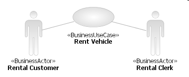
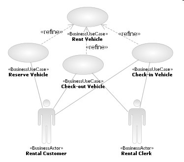

| Tarea: Refine a Business Use-Case |
|
 |
| This task is performed when there are business use-cases that have only a high-level definition, and need to be refined before they can be realized. |
| Disciplinas: Business Modeling |
|
Objetivo
The purpose of this task is to take a business use-case that is defined at a high-level to show the intent and purpose
of the business or business system -- but which is too abstract to realize directly -- and refine it into a set of use
cases for the business system that can be realized by a business process (in Task: Business Use-Case
Analysis).
|
Relaciones
| Roles | Realizador principal:
| Otras actividades adicionales que realiza:
|
| Entradas | Obligatoria:
| Opcional:
|
| Salidas |
|
| Uso del proceso |
|
Descripción principal
Previous work (in Task: Find Business Actors and Use Cases) has identified an initial
set of business actors and business use-cases; in this task, this set is examined to determine if it is necessary to
refine or partition the set of business use-cases to a level which makes their specification focused, their coverage
adequate (in support of Artifact: Business Goals, for example), and their realization
feasible. This situation may arise when the initial set covers broad functions identified at the business boundary
under consideration, when for example, the business use-case model is initially produced for an executive-level
audience interested primarily in the high-level intent and purpose of the business.
If this examination finds it necessary, the refinement of the business use-case model is then performed using one or
more of the following techniques (note that in this process, the set of business actors may also be refined):
-
the high-level business use-case may have several business actors with interaction and information requirements
that are partitionable
-
there are sequences of interactions which have value individually to a business actor -- these can be
discoverable by examination of the black-box specification of the business use case. Examination (and refinement)
of the results of the interactions may show that there are intermediate results that have value to the business
actor. Long-running processes should also be examined for obvious checkpoints.
-
the business actor(s) for the high-level business use-case may be specialized
-
lower-level intentions or goals (for the actors) that are usefully separated can be discerned, and
business use-cases identified for these
-
consideration of Business Goals may suggest supporting business use-cases that
were not initially evident. For example, a taxi service may operate a fleet of premium quality cabs (newer, cleaner
and more luxurious models). In times of high demand, one of their business goals is to maintain on-time service to
their customers even if no quality cabs are available, which may mean dispatching a regular cab from another
company.
-
existing business-process documentation review, and further discussions with business subject-matter
experts, can suggest further refinement
|
Pasos
|
Analyze Business Use-Case Model
The Artifact: Business Use Case Model is analyzed to find business
use cases that are too coarse grained to be sensibly realized directly (by Artifact: Business Use-Case Realizations) -- the business-process analyst makes the judgment that it would be better to partition the
Artifact: Business Use Case into a refined set and specify these
individually in detail -- and ultimately produce realizations for them. For example, the business use-case in the
diagram below, named Rent Vehicle, describes the intent or business purpose well enough, but is long-running
and has some evident intermediate points at which value is delivered to its business actors, the rental customer and
rental clerk.

For example, the vehicle must be reserved before being allowed off
the lot, and must be checked out of the lot before being returned (and checked in).
|
Refine High-Level (Level 1) Business Use Case
The high-level business use-case identified in the step Analyze Business Use-Case Model is refined based on
the criteria described in the Main Description. In the example, we identified that Rent Vehicle was a
long-running process, with some checkpoints at which value was delivered to the business actors -- giving the refined
business use-cases shown below, Reserve Vehicle, Check-out Vehicle and Check-in Vehicle.

It is conceivable that another level of refinement could be needed, but it is preferable to produce any finer-grained
description using a Business Use-Case Realization, typically in the form of an activity
diagram, in Task: Business Use-Case Analysis. The action nodes in the activity diagram
represent another level of process decomposition, as described in Concept: Business Process Decomposition, and illustrated below for the business
use-case Reserve Vehicle.

These lower-level business use-cases will be further detailed in Task:
Detail a Business Use Case.
The refinement of a business use-case into lower-level business use-cases may reveal additional non-functional
requirements (for example, performance, regulatory or security requirements) that must be captured in the Artifact: Supplementary Business Specification.
|
|
Más información
© Copyright IBM Corp. 1987, 2006. Reservados todos los derechos.
|
|